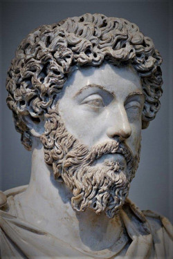

Marco Aurélio foi imperador romano entre os anos de 161 e 180, o quarto imperador da dinastia dos Antoninos. Ficou conhecido como imperador-filósofo, pois cultivava ideias de justiça e bondade.
Durante seu reinado, Marco Aurélio se dedicou ao estudo e à reflexão e escreveu diversos pensamentos, em grego. Seus escritos eram registrados em forma de diário, conhecido como “Meditações”.
Marco Aurélio ensina que o ideal a ser buscado não é a felicidade, mas a tranquilidade e o domínio das paixões e emoções, que se obtêm pela harmonia com a natureza e a aceitação de suas leis.
Para Marco Aurélio o homem se constitui de três origens: a primeira que é o corpo, constituído de carne; a segunda que é a alma, formada por um sopro e que é a origem e o que impulsiona o corpo; e terceiro a inteligência que tem por base a nossa mente. E é a inteligência que direciona o ser humano em seus caminhos e ações, levando-nos a uma vida que seja merecedora do que somos, homens. A nossa inteligência faz também parte do mundo e nos serve de guia como se fosse uma parte do próprio Deus.
Marco Aurélio faleceu em Vindobona (atual Viena), provavelmente em 17 de março de 180. Seu filho "Cômodo" foi o seu sucessor.
- "A nossa vida é aquilo que os nossos pensamentos fizerem dela."
- "Nada de desgosto, nem de desânimo; se acabas de fracassar, recomeça."
- "Muitas vezes erra não apenas quem faz, mas também quem deixa de fazer alguma coisa."
- "A maior parte das coisas que dizemos e fazemos não é necessária; quem as eliminar da própria vida será mais tranquilo e sereno."
- "Mais penosas são as consequências da ira do que as suas causas."
- "O valor de um homem é apenas tão elevado como o valor das suas ambições."
- "O melhor modo para se defender de um inimigo é não se comportar como ele."
Leitura: Estoicismo. Responsável: Pedro Menezes. Professor de Filosofia, Mestre em Ciências da Educação. Disponível em: "https://www.todamateria.com.br/estoicismo/"
Leitura: Epicteto. Responsável: Jefferson Evandro Machado Ramos. Graduado em História pela Universidade de São Paulo - USP Disponível em: https://www.suapesquisa.com/quemfoi/epicteto.htm
Leitura: Sêneca. Responsável: Desconhecido. Disponível em: https://www.todamateria.com.br/seneca/
Leitura: Marco Aurélio Responsável: Arildo Luiz Marconatto Disponível em: https://www.filosofia.com.br/historia_show.php?id=37